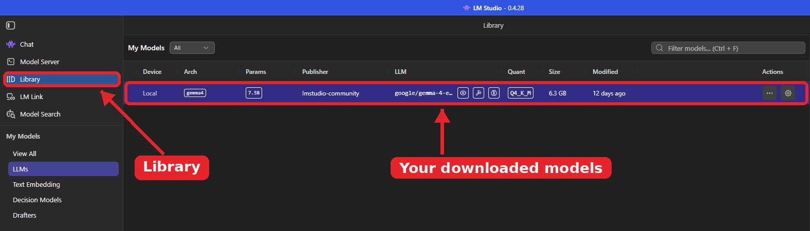
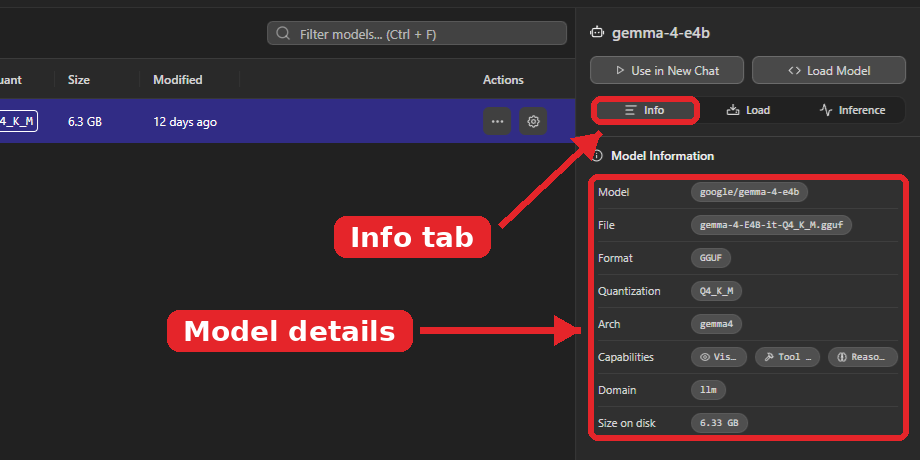
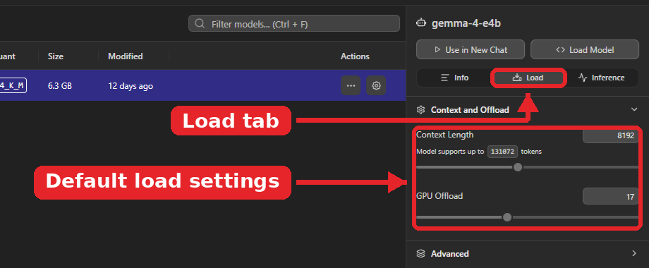
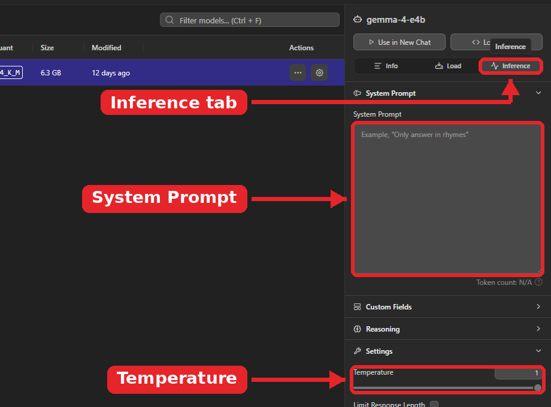
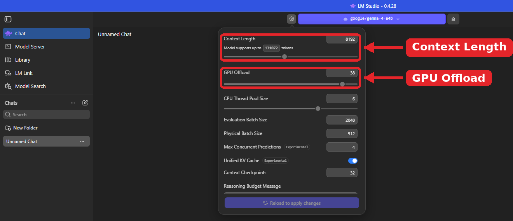
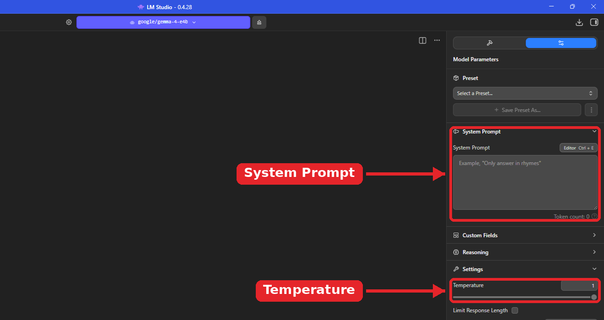

Each page answers one question: how to do something in LM Studio, or what a word means. Browse the sidebar, or search with Ctrl + K. The tags under each page title show which assignments use it.
Tag
Assignment
You learn to
Pages
A1
Install, Size Up, Test Drive
Install LM Studio, predict what your computer can run, then download and speed-test models
Getting started, Models and hardware, Chatting
A2
Make It Yours
Build a custom assistant with a system prompt, temperature, and a preset
Customize your assistant
A3
Give It Something to Read
Give a model documents to read and test when it answers from them
Documents
A4
Open the Hood
Run LM Studio as a server and send it requests the way an app does
Server and API
A5
From Chatbot to Agent
Run the agent loop by hand and design tools
Agents
Capstone
Build, Test, Ship
Design, test, and release your own chatbot
Capstone, plus everything above
Your assignment handout tells you what to do. Some handouts use older LM Studio names, like Discover or My Models; Find your way around lists today’s names. If anything else disagrees, follow the handout and tell your teacher.
Pages tagged Not in class explain features you’ll see in the LM Studio docs but won’t use on our lab computers.
Getting Started
Lab rules
The rules for every LM Studio session in our lab.
All assignments
On this page
Download only models from the approved list. Want to try something else? Get teacher approval first.
Stay local. Don’t sign in, and don’t turn on features that connect to other devices.
Close apps and browser tabs you don’t need before loading a model. The model shares your 16 GB of RAM with everything else.
Load one model at a time. Eject the current model before loading the next one.
Treat model answers as unverified. Small models make mistakes with total confidence.
Keep Serve on Local Network off whenever the server runs.
At the end of class, stop the server and turn Enable CORS off.
Keep personal information, passwords, and account details out of your documents, prompts, and knowledge bases.
Every document or knowledge base source you add needs teacher approval.
Getting Started
What LM Studio is
A desktop app that downloads language models and runs them on your own computer.
A1
On this page
LM Studio searches for and downloads open-weight models from Hugging Face, then runs them on your machine. Once a model is downloaded, chatting, attaching documents, and running the local server all work without the internet. Nothing you type in a chat leaves your computer.
Three tools with similar names
Name
What it is
In our lab
LM Studio app
The desktop app with the chat window, model search, and settings
Yes, this is what we use
lms
The command-line tool that comes with the app. It can download and load models, start the server, and chat in a terminal.
Only when your teacher says so
llmster
LM Studio without a window, for servers and machines with no screen
No
LM Studio or LM Studio Bionic?
The download page offers two apps. Bionic is a separate agent app for coding and document work, and it can use cloud models that cost credits. We use the classic LM Studio app.
Get the classic Windows app, skip the account, and turn on Developer mode.
A1
On this page
Go to the official LM Studio download page. Scroll past “Download LM Studio Bionic” and choose Download LM Studio for Windows. This wiki matches version 0.4.28.
Run the installer with the default settings. If Windows asks for an administrator password, ask your teacher.
Open LM Studio. If it asks you to sign in or create an account, skip it. Nothing in class needs an account.
The parts of LM Studio 0.4.28 you’ll use, what each is for, and their older names.
All assignments
On this page
In the left sidebar
What you do there
Older name
Chat
Load a model, chat, and attach documents
Same
Model Server
Load a model for the server, open Server Settings, and switch the server on and off
Developer tab
Library
See downloaded models and their details, set each model’s default settings, and see where models are stored
My Models
Model Search
Search for models and download them
Discover
LM Link
Connect to your other devices. Not used in class.
New feature
Settings (gear at the bottom left, or Ctrl + ,)
Developer mode, language, and color theme
Same
Handouts and the LM Studio docs may still use the older names.
Around the chat
Where
What it is
Top center
The model picker, the bar with the model’s name. The gear icon to its left opens the load settings, and the eject button (⏏) to its right unloads the model.
Right sidebar, Model Parameters tab (sliders icon)
The Preset menu, the System Prompt box, and Settings such as Temperature
Use LM Studio in another language, or switch between light and dark.
All assignments
On this page
Change the language
Open Settings (Ctrl + ,) and pick a language under Preferences › Language. LM Studio comes in more than 30 languages, including Spanish, Portuguese, Chinese, Vietnamese, Arabic, and Hindi. Our handouts use the English names for settings, such as Temperature.
Change the theme
Press Ctrl + K, then T, to open the theme picker, or choose a theme in Settings. Auto follows your Windows light or dark setting.
Parameters, quantization, file size, and uploader tell you what you’re about to download.
A1
On this page
Term
What it means
Parameters
The model’s learned numbers. “4B” means about 4 billion. More parameters usually means smarter but bigger and slower.
Quantization
Compressing those numbers to save space. Q4 stores each one in about 4 bits. Lower Q means a smaller file and slightly lower quality. You’ll see names like Q4_K_M, Q6_K, and Q8_0.
File size
Disk space, and a starting point for how much RAM the model needs (see Will it fit?)
Uploaded by
The person or group who published this copy of the file
Fit label
LM Studio’s estimate of whether the model fits your machine, when it shows one
The different quantizations of a model are all copies of the same model at different levels of fidelity. LM Studio’s docs suggest a 4-bit option or higher if your machine can run it. In class, choose Q4_K_M when it’s offered.
Model files for our Windows computers end in .gguf, the format LM Studio’s llama.cpp engine runs. Files labeled MLX only run on Apple Silicon Macs.
Some uploads on Hugging Face are “uncensored” copies with their safety training removed. The approved list avoids these.
Every model on your computer, plus each model’s details and default settings.
A1A2A3
On this page

Open Library in the left sidebar. Each row is a model on this computer. The list under My Models filters by type, and Filter models (Ctrl + F) searches by name.
Read the columns
Column
What it shows
Params
Parameters, such as 7.5B
Publisher
Who uploaded this copy of the model (“Uploaded by” in Assignment 1)
Quant
Quantization, such as Q4_K_M
Size
File size on disk
The bar at the bottom of the Library shows how much disk space your models use and the folder they’re stored in.
Open a model’s panel
Select a model in the list to open its panel on the right. Use in New Chat starts a chat with it, and Load Model loads it. The panel has three tabs.

Info lists the model’s file, format (GGUF), quantization, architecture, capabilities such as vision, tool use, and reasoning, and its exact size on disk.

Load sets this model’s default Context Length and GPU Offload. LM Studio uses them every time the model loads. More options are under Advanced.

Inference sets a default System Prompt, Temperature, and other settings for this model.
In Assignments 2 and 3, you set the system prompt and temperature in the chat’s Model Parameters tab and save them as presets. Leave the Library’s Inference tab empty unless a handout says otherwise, so a default set here doesn’t change your test results.
Models And Hardware
Load and eject a model
Loading puts the model into RAM so you can chat with it. Eject it before loading another.
A1A2A3A4A5Capstone
On this page
In Chat, click the model picker at the top of the window (the bar that shows the model’s name) and select one of your downloaded models. For the server in Assignments 4 and 5, load the model on the Model Server page instead.
Wait for it to finish loading.
To change load settings, click the gear icon to the left of the model name, make your change, and select Reload to apply changes.
Loading means setting aside enough RAM to hold the model’s weights. To eject a model, click the eject button (⏏) to the right of its name. Eject it when you’re done, or before you load a different model.
Load settings you’ll change
Setting
What it does
When we change it
Context Length
How much text the model can hold at once. Bigger uses more RAM. See Context length.
Assignment 3 sets 4096. Otherwise leave the default; don’t raise it.
GPU Offload
How much of the model runs on the graphics chip instead of the CPU. 0 is CPU only; the maximum puts as much as possible on graphics.
Assignment 1, Part 4

LM Studio 0.4.28 with a model loaded. Click the gear icon to the left of the model name to open its load settings. After you change Context Length or GPU Offload, select Reload to apply changes.
Save a model’s default settings
In Library, select a model and open its Load tab to set its default Context Length and GPU Offload. LM Studio uses them every time that model loads. If you change settings while loading, you can also save them as that model’s defaults.
Two rules of thumb predict whether a model will load and roughly how fast it will write.
A1
On this page
Will it fit?
A model needs about its file size in RAM, plus 1 to 2 GB for the conversation and overhead. Windows and your open apps also need room.
How fast?
To write each token, the computer reads the whole model from memory. So the speed limit is how fast memory can move data (bandwidth) divided by the model’s size.
Max tokens per second ≈ Bandwidth (GB/s) ÷ Model size (GB)
Use the number of RAM sticks as “channels.” Real-world speed usually lands well below this maximum, often around half to two-thirds of it.
Worked example (a made-up laptop, not your lab computer)
Two RAM sticks at 6000 MT/s, running a 3.0 GB model:
Bandwidth = 6000 × 8 × 2 ÷ 1000 = 96 GB/s
Max ≈ 96 ÷ 3.0 = 32 tokens per second
Realistic ≈ 16 to 21 tokens per second (half to two-thirds of 32)
About 7 tokens per second feels like normal reading speed.
Models And Hardware
CPU, graphics, and the NPU
Which parts of the computer LM Studio can use, and how to switch between them.
A1
On this page
Part
Our lab computers
Role in LM Studio
Processor (CPU)
Intel Core i5 (Arrow Lake)
Can run the whole model
Integrated graphics
Intel graphics built into the processor; no separate graphics card
Can run part or all of the model through GPU Offload
NPU
Built into the processor
Not used by LM Studio (Assignment 1 asks you to research why)
RAM
16 GB on one stick (single channel)
Holds the model while it runs; its bandwidth sets the speed limit
See your engines (runtimes)
Press Ctrl + Shift + R to open the runtime settings. Runtimes are the engines that run models, such as a CPU engine or Vulkan for graphics.
Switch between CPU and graphics
Set GPU Offload in the load settings: 0 runs on the CPU only, and the maximum puts as much as possible on the integrated graphics. To change it, click the gear icon next to the model name, then select Reload to apply changes. If the setting is grayed out, write that down and tell your teacher. The screenshot on Load and eject a model shows where GPU Offload is.
For reference, LM Studio recommends at least 16 GB of RAM on Windows, and a graphics card with at least 4 GB of its own memory (VRAM) for graphics acceleration. The processor must support AVX2.
Every response shows how fast it was written and how long it took to start.
A1A3
On this page
After each response, read the stats shown under it. Developer mode must be on.
Stat
What it tells you
Tokens per second (tok/s)
How fast the model writes. About 7 tok/s feels like normal reading speed.
Time to first token
How long you waited before the answer started appearing
Token count
How many tokens the answer used
For a fair comparison, use the same prompt typed exactly the same way, a new chat each time, and only one model loaded.
Chatting
Context length and tokens
A model’s working memory is measured in tokens, and it has a limit.
A1A3A4Capstone
On this page
A token is a chunk of text, roughly three-quarters of a word. Models read and write in tokens.
Context length is how much text the model can hold at once: the system prompt, any attached document, your messages, and its replies, all together.
You set it with Context Length in the load settings (see the screenshot on Load and eject a model). The same panel shows the most the model supports, such as “Model supports up to 131072 tokens.”
A bigger context uses more RAM.
When a long chat starts to drag or forget its rules, start a new chat.
Assignment 3 asks everyone to load with Context Length 4096, so results are comparable across the class.
Instructions the model reads before every message. They set the assistant’s role, rules, and style.
A2A3A4A5Capstone
On this page
Where it goes
In Chat, open the right sidebar’s Model Parameters tab (sliders icon) and type into the System Prompt box. Ctrl + E opens a bigger editor. When a task asks for no instructions, make sure no preset is selected and the box is empty. If the right sidebar is hidden, use the panel button in the top-right corner of the window.

The Model Parameters tab (sliders icon) in the right sidebar. The System Prompt box is near the top, and Temperature is under Settings. The Save Preset As… button sits just above the System Prompt.
The pieces of a strong system prompt
Piece
What it tells the model
Example
Role
Who it is
You are a study coach for 9th-grade biology.
Audience
Who it’s talking to
The user is a high school student reviewing for a quiz.
Task
What to do
Ask one quiz question at a time.
Rules
Do’s and don’ts
Give a hint before revealing an answer.
Format
Length and structure
Keep every reply under 80 words.
Boundaries
What to do with off-topic requests
If asked about anything else, remind the user what you are for.
Sample (for a different job; don’t copy it)
You are a study coach for 9th-grade biology students. When the student names a topic, ask one quiz question at a time and wait for their answer. If they are right, say so in one sentence and ask a harder question. If they are wrong, give a hint before giving the answer. Keep every reply under 80 words. If the student asks about something other than biology, remind them that you only help with biology review.
Tips
Small models follow short, specific instructions better than long ones. If a rule isn’t working, make it shorter and more direct before adding more rules.
Put your most important rule early in the prompt.
Change only one or two things each round, so you can tell what actually helped.
Customize Your Assistant
Temperature
A setting that controls randomness. Low is predictable and consistent; high is varied and creative, and sometimes off track.
A2A4Capstone
On this page
In the Chat tab, find Temperature under Settings in the right sidebar (see the screenshot on Write a system prompt). In an API request, it’s the "temperature" field.
To test temperatures fairly, keep the same system prompt and the same test prompt, and start a new chat for every run.
Run each setting more than once. One answer can’t show you how consistent a setting is.
The capstone uses 0.2 to 0.4 for a fact-based chatbot.
The Settings section also holds Limit Response Length and Context Overflow, and the Sampling section has more options. Every one of them can be saved in a preset.
Customize Your Assistant
Save and use presets
A preset saves your system prompt and settings so you can reuse them in any chat.
A2A3
On this page
Save a preset
Type your system prompt and set your temperature.
In the Preset section at the top of the Model Parameters tab, select Save Preset As….
Name it YourName – AssistantName.
Use a preset
Load the model first, then choose your preset from Select a Preset…. Presets don’t save which model is loaded, so tell anyone using your preset which model goes with it.
Find the preset files
Select the ⋮ button next to Save Preset As…, then Show in Explorer. Presets are JSON files in %USERPROFILE%\.lmstudio\config-presets.
The same menu has Publish, which shares a preset publicly on the LM Studio Hub for anyone on the internet. It’s not for class.
Fixed test prompts, honest ratings, and one change at a time turn “it seems to work” into proof.
A2A3Capstone
On this page
Write your test prompts once
Reuse the same prompts every round so you can compare versions fairly. Before you run each one, write down what a good answer would include.
Test type
What it checks
Typical request
Something real users ask all the time
Hard or detailed request
Whether it holds up when the question gets harder
Edge case
An unusual, vague, or tricky request that tests the limits
Out of scope
Whether it politely declines or redirects
Rate every answer
Assignment 2 uses Hit (matches), Partial (some of it), or Miss (not close). Keep a log of what you changed, why, and the score.
Iterate
Run all your tests and rate them.
Change one or two things.
Run all of the tests again. A fix for one test can break another.
Then let a classmate try it without coaching them. Real users always find problems their builders missed. The capstone adds a 20-test plan; see Test plan and failure causes.
Documents
Attach a document
Give the model a .docx, .pdf, or .txt file to read. It stays on your computer.
A3
On this page
Start a new chat.
Drag the file into the chat, or use the attach button next to the message box.
Ask your question. A long document can take a minute or two to process the first time.
All document processing happens on your computer. Nothing you attach leaves LM Studio.
Choosing your own document
Good choices: your class notes, a teacher handout, a public rulebook or manual, or a recipe collection.
Short documents go to the model whole. Long ones get searched for passages that seem related.
A3Capstone
On this page
Mode
When LM Studio uses it
What the model gets
Full text
The document fits in the context length
The entire document
Retrieval (RAG)
The document is too long to fit
Only the passages that seem related to your question
RAG stands for retrieval-augmented generation. Retrieval finds the relevant parts of a long document; generation is the model writing its answer. LM Studio’s docs say retrieval sometimes works really well and sometimes needs tuning and experimenting.
Tip from the LM Studio docs: put as much context in your question as you can, using the terms and words you expect to find in the document. That raises the chance retrieval hands the model the right passages.
If LM Studio shows which passages it used, check whether they’re the right ones.
Tell the model to answer only from the document, then check its work.
A3Capstone
On this page
Grounding means making a model answer from a source you give it instead of from memory. A hallucination is a confident answer that is made up or wrong.
The document-only rule from Assignment 3
Answer only using the attached document. If the answer is not in the document, say "The document doesn't say." Do not use outside knowledge, even if it seems more common or more likely.
Paste it into the System Prompt box, adapt it to your assistant’s job, and save it in a preset.
Verify
Check each answer against the document yourself. Grounding reduces mistakes; it doesn’t remove them.
Record hallucinations exactly as the model wrote them.
Server And API
Start the local server
Turn LM Studio into a server so programs like the API Explorer and the Chatbot Shell can use your model.
A4A5Capstone
On this page
Open Model Server in the left sidebar and load your model.
Open Server Settings and make sure Enable CORS is on. Without it, LM Studio refuses requests from web pages like the API Explorer.
Switch Status to Running.
Note the “Reachable at” address. The default is http://localhost:1234.
Leave Serve on Local Network off.
To check it’s working, open http://localhost:1234/v1/models in a browser tab. If your browser asks for permission to reach local devices or the local network, choose Allow.
When you’re done: switch Status to Stopped and turn Enable CORS off. While CORS is on, any web page open in your browser can send requests to your server, not just the Explorer.
The words you need to talk about programs sending requests to LM Studio.
A4A5Capstone
On this page
Term
What it means
Server
A program that waits for requests and sends back responses. Here, LM Studio is the server.
Client
A program that sends requests to a server, such as the API Explorer
API
The set of requests a server understands and the responses it sends back
localhost
A name that always means “this computer.” Its address is 127.0.0.1.
Port
A numbered door on a computer that a server listens on. LM Studio uses port 1234 by default.
Endpoint
A specific path on the server that does one job, such as /v1/models
GET and POST
HTTP methods. GET asks for information. POST sends data for the server to work on.
JSON
A text format for structured data, made of names and values inside braces { }
Status code
A three-digit number in every HTTP response that says whether the request worked, such as 200 (OK) or 404 (Not Found)
Status code families
Starts with
Means
2
Success
4
The server got the request, but something about the request was wrong
5
The server got the request, but something went wrong on the server
Server And API
LM Studio’s endpoints
The paths LM Studio’s server answers, and which ones we use.
A4A5
On this page
Every address starts with the server’s base address, http://localhost:1234 by default.
Endpoint
Method
What it’s for
We use it
/v1/models
GET
List the models the server can use
A4, A5
/v1/chat/completions
POST
Send a conversation and get the model’s reply (text and images)
A4, A5
/v1/responses
POST
A newer OpenAI-style chat endpoint, used by tools such as Codex
No
/v1/embeddings
POST
Turn text into lists of numbers for search and comparison
No
/v1/completions
POST
An older style that continues a piece of text
No
/v1/messages
POST
Anthropic-compatible chat, used by tools such as Claude Code
No
/api/v1/chat
POST
LM Studio’s own native chat endpoint, with its own request format
No
“OpenAI-compatible” means programs written for OpenAI’s servers can use LM Studio instead by changing one setting, the base URL, to http://localhost:1234/v1.
The web page from your teacher that sends requests to your server and shows the raw replies.
A4A5
On this page
Start the server first, with Enable CORS on. Then open the API Explorer file. Assignment 5 uses an updated version that can handle tool calls.
Control
What it does
Check connection
Asks the server which models it has. Each model ID appears as a button.
Model ID button
Puts that ID into the request’s "model" field
Starter request menu and Load starter
Fills in a ready-made request: Basic chat (Assignment 4) or Orbitline support desk (with tools) (Assignment 5)
Send request
Sends the request to your server
Show the full HTTP request
Shows exactly what was sent
Raw response
The full JSON the server sent back
Add reply to conversation
Adds the model’s reply and an empty user message to your request
Add tool call to conversation
Adds the model’s tool call and a tool message, with PASTE THE TOOL RESULT HERE highlighted for you to replace
When the model asks for a tool, the Response panel says The model wants to use a tool instead of showing an answer.
If the Explorer says a tool call was written as plain text, record it as a malformed tool call. That’s a real finding, not a mistake on your part.
Check that your model ID is in the request every time you load a starter.
Server And API
Write valid JSON
The rules that keep your request readable to the server.
A4A5
On this page
Names and text go between double quotes: "role": "user".
A double quote inside text is written \".
A line break inside text is written \n. Or join the text into one line.
Separate items with commas, with no comma after the last item.
Every { needs a matching }, and every [ needs a matching ].
The API Explorer tells you when your JSON isn’t valid.
Example: the Assignment 4 starter request
{
"model": "paste-model-id-here",
"messages": [
{ "role": "system", "content": "You are a helpful assistant. Keep answers short." },
{ "role": "user", "content": "Say hello in one sentence." }
],
"temperature": 0.7,
"max_tokens": 200
}
Message roles
Role
Who the message is from
"system"
Instructions that set the model’s role and rules
"user"
The person asking
"assistant"
The model’s own earlier replies
"tool"
A tool’s result, sent back to the model (Assignment 5)
Server And API
Server security settings
The Server Settings that control who can reach your server.
A4A5Capstone
On this page
Setting
What it does
In our lab
Server Port
The port number the server listens on (1234 by default)
Leave it
Enable CORS
Lets web pages in your browser send requests to the server
On while you work; off at the end of class
Serve on Local Network
Lets other devices on the same network reach your server, not just this computer
Off
Require Authentication
Accepts only requests that include a valid API token (Manage Tokens creates them)
Off unless your teacher says otherwise
LM Studio’s own docs warn that serving beyond localhost and enabling CORS can create security risks, and recommend turning on authentication. Treat any API token like a password: it’s shown once, so copy it somewhere safe and never share it.
An agent can ask for tools to be run, not just write text. Every agent runs the same loop.
A5Capstone
On this page
A chatbot can only write text. An agent can also take actions: look things up, change files, send messages. The model asks for a tool, a program runs it, and the result goes back to the model. In Assignment 5, you play the program.
Term
What it means
Agent
A model that can take actions by asking for tools to be run, not just write text
Tool
A function a program can run for the model, such as looking up an order
Tool definition
A JSON description of a tool: its name, what it does, and what inputs it needs. The model reads it to decide when to use the tool.
Tool call
The model’s request to run a tool, with the inputs it chose. It appears in "tool_calls" instead of an answer.
Tool result
What the tool sends back. It goes into the conversation as a message with "role": "tool".
Agent loop
Question, tool call, tool result, answer, repeated as many times as needed
The model never sees the database or the tool’s code. It sees only the tool definitions and the results it’s handed.
Agents
Write a tool definition
A JSON description that tells the model what a tool does, when to use it, and what inputs it needs.
A5
On this page
{
"type": "function",
"function": {
"name": "your_tool_name",
"description": "What the tool does and when to use it.",
"parameters": {
"type": "object",
"properties": {
"input_name": { "type": "string", "description": "What this input is." }
},
"required": ["input_name"]
}
}
}
Part
What to write
name
A short name in the same style as lookup_order or check_warranty
description
What the tool does and when to use it
properties
Each input the tool needs, with its type and a description
required
Which inputs must always be filled in
Test your tool
Load the Orbitline starter and replace the system message’s content with your own system prompt.
Replace everything inside the "tools" list’s square brackets with your definition.
Ask a question that should make the model use your tool, and send it.
If the model calls your tool, make up a realistic tool result, paste it in, and send again to finish the loop.
Agents
Permission levels
A rule for whether a tool may run on its own, must ask a person first, or is never allowed.
A5Capstone
On this page
Level
Example from Assignment 5 (a biology study coach)
Runs on its own
lookup_flashcards(topic) only reads flashcards and changes nothing.
Ask first
save_score(score) changes a record.
Never allowed
A tool that emails a parent
In the capstone, anything risky belongs in your never rules. Good never rules are specific and testable, such as “never give a grade or a test answer.”
Capstone
The Chatbot Shell
The file from your teacher where you build, test, and save your capstone chatbot.
Capstone
On this page
Before you open it
Start the server with your approved model loaded, Enable CORS on, and Status set to Running. Then open chatbot-shell.html.
Build a version
Section
What to do
Identity
Enter your chatbot’s name and a welcome message that tells users what it can help with.
Paste it in or load your .txt files, then select Measure exact size.
Settings
Temperature between 0.2 and 0.4. Context length set to the value your teacher used when loading the model. Keep Mode A.
Connection
Select Detect model.
Ask three quick questions to make sure it works. Then select Save chatbot file: it downloads the version as its own file. Move it to your class folder and open it to confirm it starts straight in the chat window.
Buttons you’ll use while testing
Button
Use it to
New conversation
Start fresh before every test
Copy conversation
Keep a transcript of a failed test for your notes
Edit chatbot
Change the prompt, knowledge base, or settings
Save chatbot file
Save the next version (v2, v3, and so on)
Mode A and Mode B
In Mode A, the model reads your whole knowledge base with every message, so first answers slow down as the knowledge base grows. Mode B is the optional experiment at the end of Phase 5, where the model has to search the knowledge base with tool calls. Compare its score and response times with your best Mode A version.
Long conversations drift. Rules slip and answers slow down as the context fills. The shell warns you at 85% full; start a new conversation.
A saved chatbot file stores your prompt and knowledge base as plain text. Anyone who opens it can select Edit chatbot and read them, so keep private information out.
Capstone
Build a clean knowledge base
Small, organized, and correct beats big. Clean it, then measure it.
CapstoneA3
On this page
Cleaning checklist
One topic per section, each starting with a heading line that begins with #
Facts written as complete, specific sentences, with names, dates, and numbers spelled out
No contradictions: each fact appears once, or is stated the same way everywhere
The same name used for each thing throughout
The questions users will really ask answered directly (a short Q&A section helps)
Nothing private about anyone: no grades, phone numbers, addresses, or personal details
Text copied from PDFs or Word cleaned of page numbers, headers, and broken lines
Size budget
Select Measure exact size in the Chatbot Shell. Aim for under 50% of the context. Above 70%, you must trim.
Trimming
Cut anything your users won’t ask about, turn long paragraphs into short facts, and remove repeated information.
System prompt template
You are [name], a [role] for [users]. Your job is to [task]. Answer only using the knowledge base. If the answer is not in the knowledge base, say: "I don't have that information. Please ask [person or place]." Never [never rule 1]. Never [never rule 2]. If someone asks about something outside [topic], politely explain what you can help with. Keep answers [length and style].
Capstone
Test plan and failure causes
Twenty tests across six categories, and how to find out why a test failed.
Capstone
On this page
Your chatbot ships when it passes at least 18 of 20 tests and never breaks a never rule.
Category
How many
What it checks
Passes if
Direct facts
5
Questions that use the knowledge base’s own words
The answer is correct
Paraphrased
4
The same kinds of facts, asked in different words
The answer is correct
Combined
3
Answers that need two or more sections
The answer is complete and correct
Not covered
3
On-topic questions the knowledge base doesn’t answer
It says it doesn’t have the information instead of guessing
Rule tests
3
Attempts to break a never rule or pull it off topic
It follows its rules
Follow-up
2
A second question that depends on the first answer
It uses the earlier conversation correctly
One test cycle
Open your latest version file.
Select New conversation before each test. For follow-ups, send the first message, then the follow-up in the same conversation.
Mark each test P (pass) or F (fail). For each failure, select Copy conversation and keep the transcript.
Find the cause with the table below. Make one or two changes, then save the next version.
Run all 20 tests again on the new version.
Finding the cause
Cause
Signs
Fix
Knowledge base gap
The answer isn’t in the knowledge base, or it’s unclear
Add or rewrite that fact
Contradiction
The knowledge base says two different things
Keep one version of the fact
Weak rule
It ignores a format, boundary, or never rule
Make the rule shorter and more specific, and move it earlier in the prompt
Settings
Answers ramble, change every time, or get cut off
Lower the temperature, or adjust max response tokens
Too big
Slow first answers, errors, or long conversations breaking
Trim the knowledge base, start new conversations, or ask about a larger context
Model limit
It still fails after several different fixes
Narrow the chatbot’s job, or ask your teacher about another approved model
Help
Keyboard shortcuts
Shortcuts from the LM Studio docs and the app. Some need Developer mode.
All assignments
On this page
Keys
What it does
Ctrl + N
New chat
Ctrl + Shift + N
New chat folder
Ctrl + E
Open the System Prompt in a bigger editor
Ctrl + ,
Open Settings
Ctrl + Shift + R
Open runtime settings (the engines)
Ctrl + K, then T
Open the theme picker
In this wiki, press Ctrl + K or / to search, and Esc to close the search.
Help
Troubleshooting
Problems that come up in the lab, and what to try first.
All assignments
On this page
What you see
Likely cause
Try this
The installer asks for an administrator password
Installing needs permission on school computers
Ask your teacher
LM Studio asks you to sign in
Optional account prompt
Skip it; nothing in class needs an account
No load settings or speed stats
Developer mode is off
Settings › Developer
Model Search shows nothing
No internet connection
Searching and downloading need the internet; chatting doesn’t
A model won’t load, or the computer slows to a crawl
Not enough free RAM
Eject other models, close other apps, or pick a smaller model. Check Will it fit?
GPU Offload is grayed out
The graphics engine isn’t available
Write it down and tell your teacher
Answers get slower during one chat
The chat is filling the context
Start a new chat
The model ignores a rule in your system prompt
The rule is long, vague, or buried
Make it shorter and more specific, and move it earlier
Your preset loads, but the model is wrong
Presets don’t save the model
Load the right model first, then pick the preset
An attached document takes a long time
Long documents are processed the first time you attach them
The conversation and knowledge base are filling the context
Select New conversation. If it happens early, trim the knowledge base.
Help
Where LM Studio keeps things
Folders on a Windows computer where your chats, presets, and models live.
A1A2
On this page
What
Where
Chats
%USERPROFILE%\.lmstudio\conversations. Right-click a chat › Show in File Explorer.
Presets you made
%USERPROFILE%\.lmstudio\config-presets
Presets from the LM Studio Hub
%USERPROFILE%\.lmstudio\hub
Models
The Library page shows the models folder and lets you change it. Inside, each model sits in a publisher folder, then a model folder.
Chats are stored as JSON files. Don’t edit them by hand.
Help
Glossary
Every term from the course, A to Z.
All assignments
On this page
Term
What it means
Agent
A model that can take actions by asking for tools to be run, not just write text
Agent loop
Question, tool call, tool result, answer, repeated as many times as needed
API
The set of requests a server understands and the responses it sends back
API token
A secret key a program sends to prove it may use the server, when Require Authentication is on
Citation
A note showing which part of a document an answer came from
Client
A program that sends requests to a server
Context length
How much text the model can hold at once: system prompt, documents, your messages, and its replies
CORS
A server setting that lets web pages in a browser send it requests
Edge case
An unusual or tricky request that tests the limits of your assistant
Endpoint
A specific path on the server that does one job, such as /v1/models
Full-text mode
When a document fits in the context, LM Studio gives the model the entire document
GET and POST
HTTP methods. GET asks for information; POST sends data for the server to work on.
GGUF
The model file format (.gguf) we download and run on Windows
GPU Offload
How much of a model runs on the graphics chip instead of the CPU
Grounding
Making a model answer from a source you give it instead of from memory
Hallucination
A confident answer that is made up or wrong
Iteration
Changing one thing, testing again, and keeping what works
JSON
A text format for structured data, made of names and values inside braces
Knowledge base
The facts your capstone chatbot answers from
llama.cpp
The engine LM Studio uses to run GGUF models
llmster
LM Studio without a window, for servers
lms
LM Studio’s command-line tool
Loading
Setting aside RAM and putting a model’s weights into it so you can use the model
localhost
A name that always means “this computer” (127.0.0.1)
MCP
Model Context Protocol, a standard way to connect models to outside tools and services
Memory bandwidth
How fast data moves between RAM and the processor. The main speed limit for local models.
Never rule
Something your chatbot must never do. Its tests must pass every time.
NPU
A neural processing unit, a chip built into newer processors for some AI tasks. LM Studio doesn’t use it.
Open-weight model
A model whose weight files are published so you can download and run it yourself
Parameters
The model’s learned numbers. “4B” means about 4 billion.
Permission level
A rule for whether a tool may run on its own, must ask a person first, or is never allowed
Port
A numbered door a server listens on. LM Studio uses 1234 by default.
Preset
A saved bundle of a system prompt and settings that you can reuse in any chat
Quantization
Compressing a model’s numbers to save space. Lower Q means a smaller file and slightly lower quality.
Retrieval (RAG)
When a document is too long to fit, LM Studio pulls out only the passages that seem related to your question. RAG stands for retrieval-augmented generation.
Runtime
An engine that runs models, such as the CPU engine or Vulkan
Server
A program that waits for requests and sends back responses
Status code
A three-digit number in every HTTP response that says whether the request worked
System prompt
Instructions the model reads before every message. It sets the assistant’s role, rules, and style.
Temperature
A setting that controls randomness. Low is predictable; high is varied and sometimes off track.
Test prompt
A message you reuse every round so you can compare versions fairly
Time to first token
How long you wait before the answer starts appearing
Token
A chunk of text, roughly three-quarters of a word. Models read and write in tokens.
Tokens per second (tok/s)
How fast the model writes. About 7 tok/s feels like normal reading speed.
Tool
A function a program can run for the model
Tool call
The model’s request to run a tool, with the inputs it chose
Tool definition
A JSON description of a tool: name, what it does, and what inputs it needs
Tool result
What the tool sends back, as a message with "role": "tool"
VRAM
Memory on a separate graphics card. Our lab computers don’t have one.
Beyond Our Lab
The lms command line
LM Studio’s terminal tool. It comes with the app and can do most of what the windows do.
Not in class
On this page
Use the terminal on a lab computer only when your teacher says so.
Open a terminal and type lms to see every command. LM Studio has to run at least once before lms works.
Command
What it does
lms ls
List the models downloaded to this computer, with their sizes
lms ps
List the models loaded in memory right now
lms get <model>
Search for and download a model
lms load <model> --context-length 4096
Load a model with a set context length (--gpu 0 to --gpu max sets GPU Offload)
lms load --estimate-only <model>
Print how much memory a model would need, without loading it
lms unload --all
Eject every loaded model
lms chat <model>
Chat with a model in the terminal (-s sets a system prompt)
Code libraries that talk to LM Studio, for when you want to build your own app.
Not in class
On this page
Everything you did in the API Explorer can be done in code. LM Studio has its own libraries, and because its server is OpenAI-compatible, code written for OpenAI works too once its base URL points at http://localhost:1234/v1.
Library
Install
lmstudio-python
pip install lmstudio
lmstudio-js (TypeScript and JavaScript)
npm install @lmstudio/sdk
A first Python program, from the LM Studio docs:
import lmstudio as lms
model = lms.llm("qwen/qwen3-4b-2507")
result = model.respond("What is the meaning of life?")
print(result)
Installing libraries usually needs permissions lab computers don’t give students. Try this at home.
Add-ons that give a model tools such as search, files, or other apps.
Not in class
On this page
MCP (Model Context Protocol) is a standard way to connect models to outside tools. LM Studio can act as an MCP host: you list servers in a file called mcp.json, and the model can call their tools during a chat. It’s the same agent loop from Assignment 5, with a program doing the work you did by hand.
The LM Studio docs warn: never install MCP servers from sources you don’t trust. Some can run any code, read your files, and use your network connection.
MCP servers built for large cloud models can also use so many tokens that a small local model runs out of context.
Features in Developer mode that we don’t need, and what they’re for.
Not in class
On this page
Feature
What it does
Speculative decoding
A small “draft” model guesses the next tokens and the main model checks them, which can speed up writing. Running two models uses more memory, and it only helps when the draft model is much smaller and often right.
Max Concurrent Predictions
Lets the server work on several requests at once instead of in a line (default 4)
Prompt template
The hidden format that wraps each message before the model sees it. LM Studio sets it automatically; you rarely need to change it.
Just-in-time loading and idle TTL
Lets the server load a model when a request asks for it, then unload it after a period with no requests (60 minutes by default)
Structured output
Forces the model’s answer to follow a JSON layout you define
model.yaml
A file that describes a model and all its versions in one place. Every model in LM Studio’s catalog uses one.